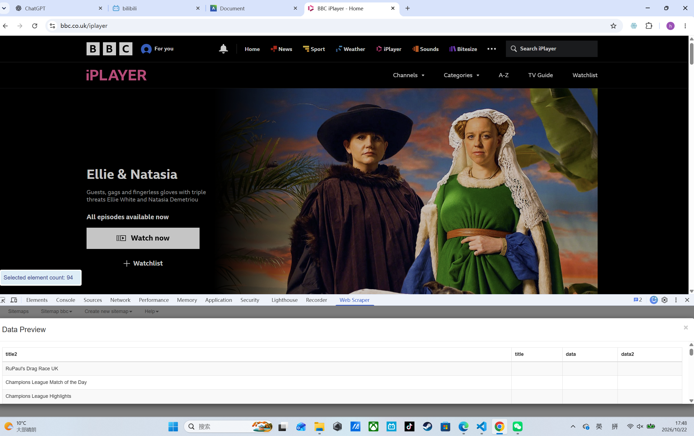

WEEK 01
This week, I began formally studying digital media as an academic subject.
PERSONAL WEB / 2026
PLAYER / DIGITAL MEDIA STUDENT
Exploring creativity, culture and interesting thoughts in daily life.
EXPLORE THE WORLDS ↓ABOUT ME
Just a Digital Media student interested in traveling and exploring interests in daily life.
Four interests. Four different perspectives.
Select a world to unlock a little more.
WEEK 01
This week, I began formally studying digital media as an academic subject.
WEEK 02
I started reflecting on the relationship between digital platforms and media, the influence media has on us, and began learning HTML.
WEEK 03
This week, I started exploring web scraping and experimented with using web scraping tools to search for information. I also tried to write a web scraping program using Python.

WEEK 04
In the fourth week, I encountered my first group project. My group chose "Senario 2" as our focus. After brainstorming ten potential ideas, we settled on the following research question: "How clearly do UK universities communicate permitted uses, disclosure requirements, and support for generative AI tools in their assessments?" This topic stemmed from my experience during Welcome Week, when I reviewed my own university’s policy documents regarding AI tools. I found certain aspects to be ambiguous, for instance, there was a lack of concrete examples clarifying exactly which types of tasks or questions allow for the use of AI. Consequently, I decided to investigate whether this issue is prevalent at other UK universities. Do other institutions provide clear, specific guidelines on AI usa, and are these policies accessible to students before they started studing? Because of time constraints, I plan to use the web-scraping techniques I learned the previous week to extract data from the official websites and publicly available documents of universities. While this approach avoids accessing students' personal data, thereby safeguarding their privacy relying solely on official institutional documents overlooks the student perspective; it reinforces the university's authority while failing to capture the authentic experiences of the students themselves.
WEEK 05
This week, I conducted data scraping and attempted to visualize the findings using pie charts in Excel. During the data-scraping process, I discovered that it is difficult to establish a uniform standard or definition for AI policies, as they vary significantly across institutions, for instance, the University of Cambridge delegates AI policy-making to its individual colleges. Furthermore, because different universities use different terminology in their official documentation, it is necessary to employ a variety of keywords for the search process. Some institutions also provide detailed explanations of their policies only after classes have officially begun a case in point being the "Welcome Week" at the University of Leeds. Consequently, one cannot simply judge the clarity of a university’s AI policy based solely on a basic document search, as such an approach fails to account for the actual experience of the students.